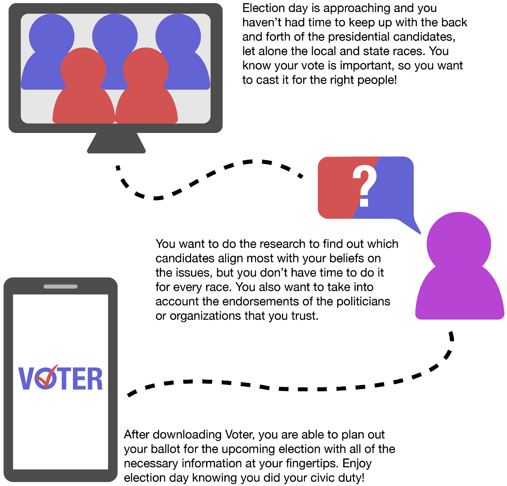

Features
Plan Out Your Ballot Before Election Day
Based on your zip code, Voter determines which local, state, and federal races you will be voting in. From there, you can compare candidates based on the key points of their platform and how well they match with your own political beliefs.

Ballot Plan
View all of the races in the upcoming election and get updates on your top election topics with swipe through stories.

Compare with a Glance
Compare candidates by the top priorities of their campaign or by the details of their platform.
Voter Understands Your Politics
After registering, Voter uses your political beliefs and top election issues to guide your user experience.

For All Areas of the Country
Upon creating an account, you select your zip code so that Voter can provide you with specific information for your district.

Your Top 5 Election Issues
Select your top 5 issues so that Voter can keep you updated on what candidates are saying about them.

Political Leanings Inventory
The quiz you take while registering allows Voter to determine percent match scores for candidates' platforms.
Compare Candidates Based on the Facts
See how candidates stack up in the news, question and answers, endorsements, and their platforms. For each comparison subject, candidates are given a percent match score, representing to what extent their beliefs align with your own.

By the Issues
Compare candidates' stances on each of the issues, starting with your top 5 issues.

Questions and Answers
Enhance your understanding of the candidates with Q&A's.
Get Registered and Stay Updated
Stay informed of important election deadlines and dates and learn more about America's political process with swipe through education modules.

Registration Help
Important election dates and answers to FAQ's help keep you on track and in the know.

Education Modules
Discover new information about topics important the USA's election process with swipe through modules.

Issue Focused Stories
Stay updated on what candidates in all races are saying about your top 5 election topics with swipe through stories.
The Process
The Problem
How can Americans make more informed decisions when voting in elections while living busy lives outside of the world of politics?
Fake News and Its Relation to Older Adults
- One of the major issues with the modern political climate is misinformation. In recent years, older adults have been found to be statistically more likely to circulate and cite biased news sources.
- My Findings:
- Fake news is more readily available on Facebook than real news, at a time when Facebook's largest growing user group is adults 65+.
- Older adults are four times more likely to share fake news than their younger counterparts.
- The quick circulation of fake news makes it hard to figure out where the original source is or where misinformation stemmed from.
- Older adults often lack technological literacy skills to discern reliable news websites from non-reliable alternatives.
Arriving at a Solution
- Having done research on fake news and older adults, it made me think about my original problem statement in terms of voters who are less engaged with politics.
- Around two-thirds of Americans have reported feeling worn out by constant political news each year since 2016 according to Pew Research.
- I thought back to past elections and remembered how politically active young people were using Instagram as a platform to announce who they were voting for down the ballot. Providing this information to like minded, but less engaged voters allowed them to make more informed decisions without much research.
- In today's media climate, it is increasingly difficult for those not keeping up with politics to keep up with the multifaceted, constantly evolving election cycle.
- It was with this that I shifted Voter's target demographic to Americans without the time or personal interest to keep up with politics.
- Voter would focus on providing the necessary facts in a summarized format so that Americans can make more informed election decisions in a timely, straightforward manner.
Service Identity
In order to plan out my final solution, I needed to hammer out how Voter would be used in relation to the election process and its features. This helped me identify areas in the election process that would allow Voter to stand out against competition and be seen as a necessary tool.
Service Model
Brand Audit

Crafting a User Persona
With the "less-engaged voter" as my primary target user, I moved to craft a persona that would embody the primary frustrations and motivations of this user group.
User Persona: Anne

Anne's Hero Journey
Planning the Workflows
Next, I created UI specs to help determine how users would navigate the functionality within the application.
Login/Sign Up Sequence

Overall Application Heirarchy

Candidate Comparison Subject Options
Registration/Education Module Sequence

Branding Guide
Being a tool for commucating important election news, I wanted Voter's typography to have a formal, yet modern feel. Thus, I chose Helvetica Neue as the app's font. I also sought to incorporate the red and blue of the USA's leading political parties, but a brighter tint to liven up the interface.
Branding Style Guide